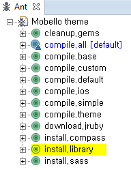

|
Mobello는 Sass & Compass를 통해 테마를 제공하고 있습니다.
Mobello에서 제공하는 테마를 수정하거나, 추가해서 적용하기 위해서는 다음에 해당하는 것들이 설치되어야 합니다.
|
현재 Mobello에서는 eclipse기반의 스튜디오를 사용하고 있는데 jruby 기반에서 설치하고 컴파일하는 것을 권장하고 있습니다.
목차:
eclipse에서 ant 기반으로 설치하고 컴파일하는 하는 환경을 기준으로 설명하겠습니다. Mobello에서는 현재 JRuby기반에서 설치하고 컴파일하는 것을 권장합니다.
mobello-theme repository을 clone 합니다.
branch: master URI : https://github.com/mobello/mobello-theme.git host: github.com repository: /mobello/mobello-theme.git |
install.library를 실행합니다. 자동으로 다음 라이브러리들을 다운로드 해서 설치합니다.
 |
버전을 변경하려면 build.xml에 jruby-version property를 수정하시면 됩니다. build.xml <property name="jruby-version" value="1.6.7.2"/> |

JRuby기반의 설치방법을 사용하지 않고 직접 console 기반으로 사용하기를 원하시는 사용자를 위해 설치에 대한 링크를 제공합니다.
JRuby기반의 설치방법을 사용하지 않고 gui 기반의 어플리케이션을 사용하고자 하는 사용자를 위해 다음 어플리케이션을 추천합니다.